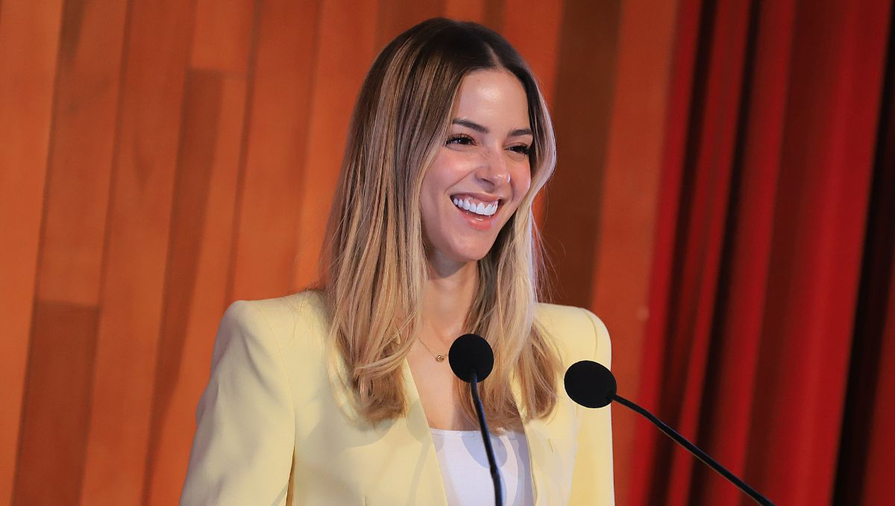
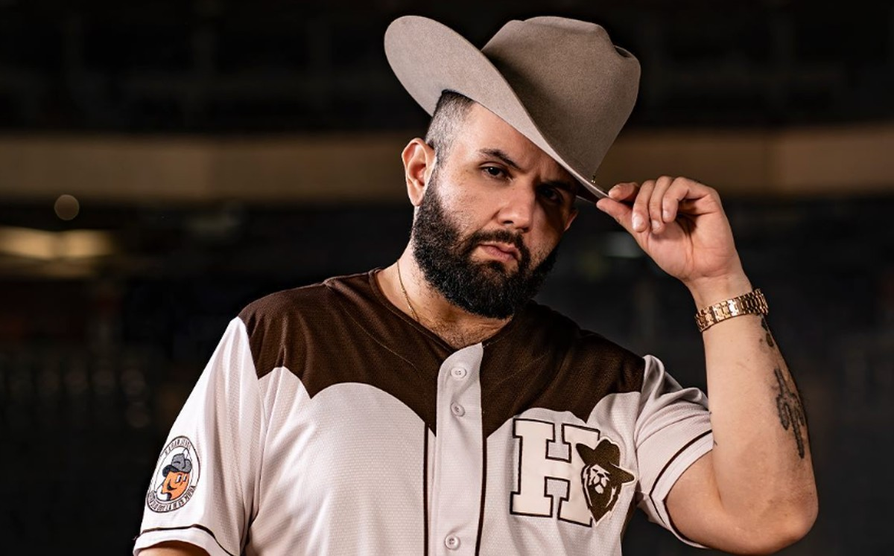
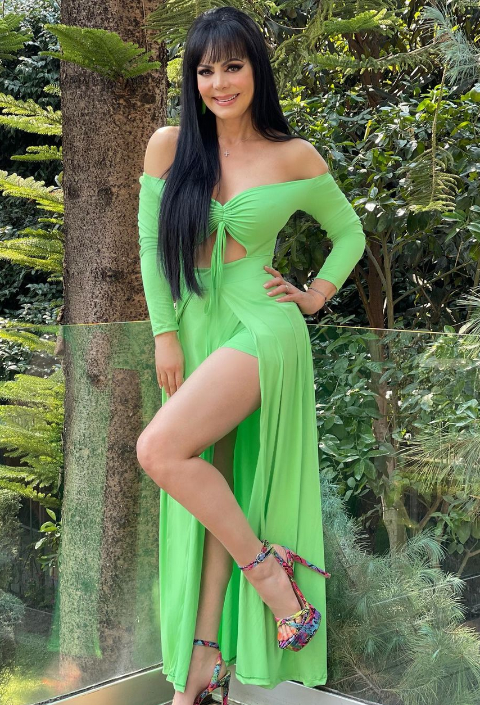

POLÍTICAMariana Rodríguez al 2027
En Monterrey resuena fuerte que Mariana lidera las preferencias para la gubernatura de Nuevo León con un 36%. La titular de AMAR a Nuevo León sigue dando de qué hablar y proyectando su imagen.
Sábado 12 de septiembre de 2026
Noticias, tendencias y lo que está pasando hoy
Todo lo que está pasando en Monterrey y el resto del país, sin filtros.
El drama está a todo lo que da en la televisión. Apenas este 8 de septiembre se confirmó que Gala Montes decidió salir de su reality show por decisión propia tras mucha polémica. Las redes sociales están divididas, pero lo más sano siempre es alejarse de entornos que no suman a nuestra paz y bienestar.
*Última actualización: 12 de septiembre de 2026.

POLÍTICAEn Monterrey resuena fuerte que Mariana lidera las preferencias para la gubernatura de Nuevo León con un 36%. La titular de AMAR a Nuevo León sigue dando de qué hablar y proyectando su imagen.
Hoy 12 de septiembre revientan el Auditorio Banamex. Recuerda mantenerte hidratada si vas y disfrutar al máximo, ¡la música en vivo es excelente terapia para relajarnos!

MÚSICAEl cantante tuvo que salir a disculparse públicamente tras cancelar su concierto en Las Vegas este fin de semana. Los fans están un poco decepcionados, pero prometió reponer la fecha pronto.

ESPECTÁCULOSMaribel se mostró muy angustiada por Gala tras su repentina salida de la televisión, al grado de buscar contactar al papá de la joven actriz para ofrecer su apoyo.